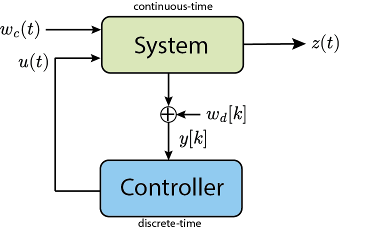
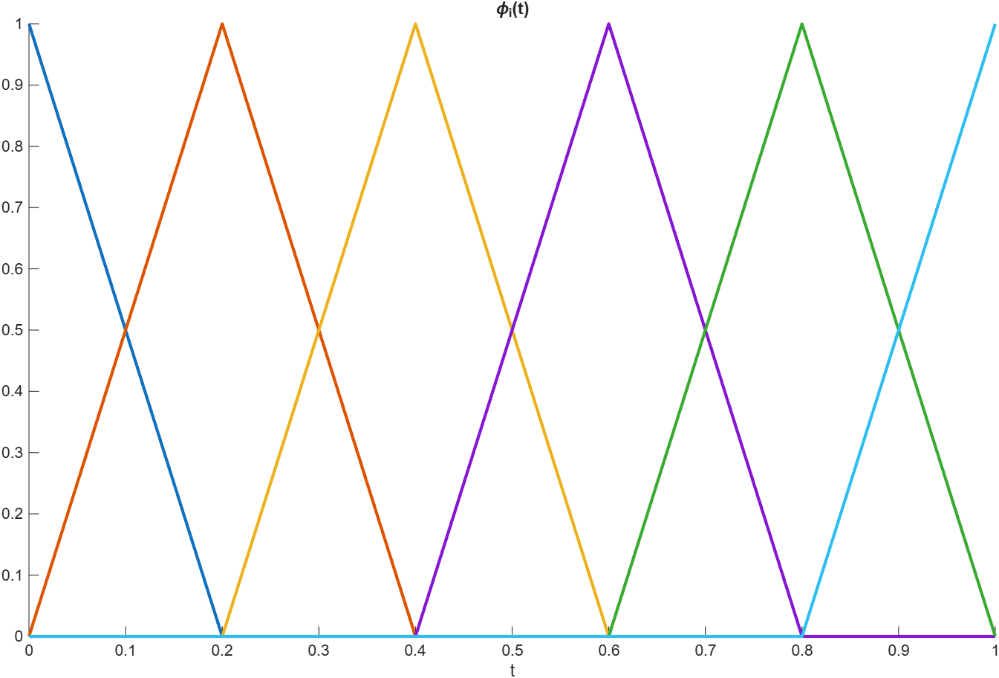
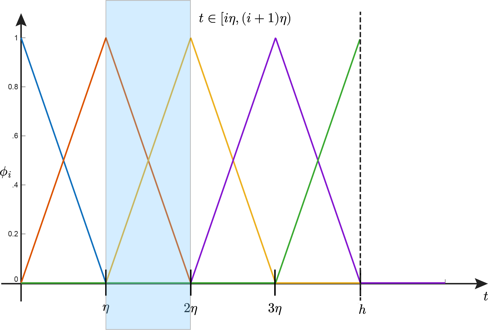
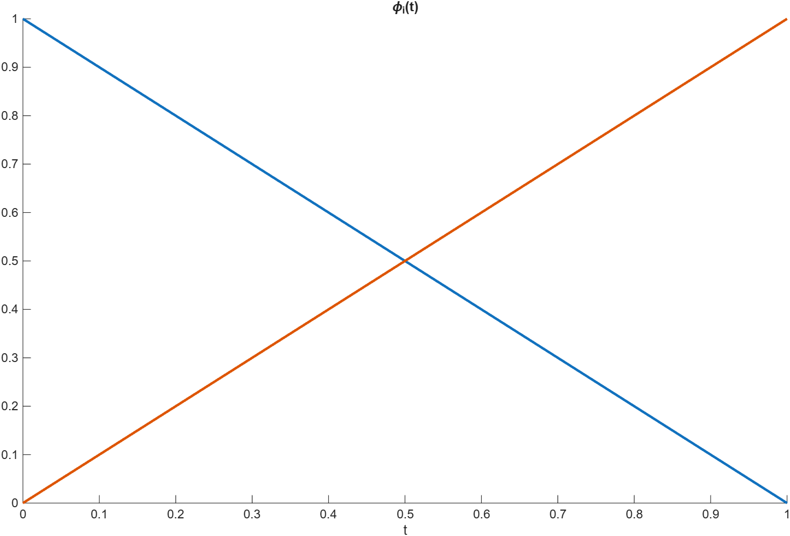
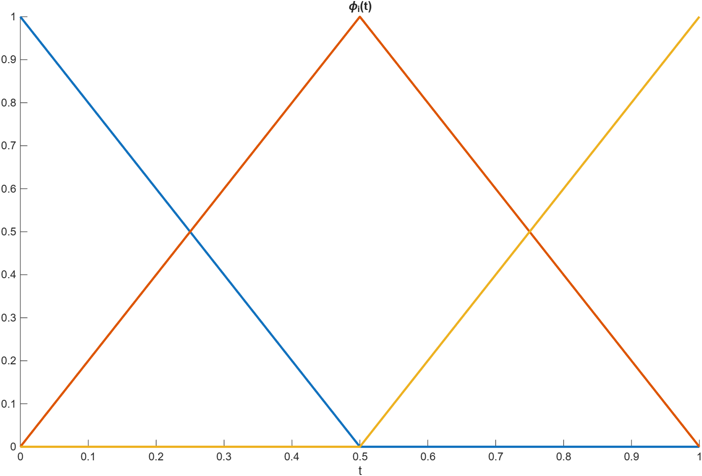

Introduction to Robust Control of Sampled-Data Systems via DLMI
Prof. Dr. Marcos Rogério Fernandes
May 18, 2026
Objectives
The objectives of this lecture are to understand:
- Definition of Sampled-Data Systems;
- Stability of Sampled-Data Systems;
- Robust Stability of Sampled-Data Systems;
- Examples;
References
- J. C. Geromel, "Differential Linear Matrix Inequalities In Sampled-Data Systems Filtering And Control," Springer, 2023.
- J. C. Geromel, G. W. Gabriel, and T. R. Gonçalves, "Differential Linear Matrix Inequalities Optimization," IEEE Control Systems Letters, 2019.
- J. C. Geromel, P. Colaneri, and P. Bolzern, "Differential Linear Matrix Inequality In Optimal Sampled-Data Control," Automatica, 2019.
The Sampled-Data System
$$ \begin{aligned} \dot{x}(t)&=Ax(t)+B_u u(t)+B_ww_c(t)\\ z(t)&=Cx(t)+D_u u(t)\\ y[k]&=C_dx[k]+D_w w_d[k]\\ u(t)&=u[k],\quad \forall t\in[t_k,t_{k+1}) \end{aligned} $$
The Sampled-Data System

Stability of Continuous-time System
$$ \begin{aligned} \dot{x}(t)=Ax(t),\quad x(0)=x_0\in\mathbb{R}^n \end{aligned} $$
The system is asymptotically stable iff$$ \exists P=P^\trp \succ0\\ A^\trp P + PA \prec 0 $$
Stability of Discrete-time System
$$ \begin{aligned} x_{k+1}=\underbrace{e^{Ah}}_{A_d}x_k,\quad x_0\in\mathbb{R}^n \end{aligned} $$
The system is asymptotically stable iff$$ \exists S=S^\trp \succ0\\ A_d^\trp S A_d - S \prec 0 $$
Question: Stability Equivalence?
$$ P=P^\trp \succ0\\ A^\trp P + PA \prec 0 $$
Can we state that$$ A_d^\trp P A_d - P \prec 0 ? $$
obs: for any $h>0$Stability of Continuous-time System
$$ \exists V(x)=x^\trp P x \Rightarrow \dot{V}=-x^\trp Q x $$
where$$ A^\trp P + PA +Q =0 $$
Obs: $ P=\int_0^\infty e^{A^\trp\tau} Q e^{A\tau}d\tau $Stability of Continuous-time System
$$ \int_0^h \dot{V} d\tau =-\int_0^h x^\trp Q x d\tau $$
thus,$$ V(x(h))-V(x(0)) =-\int_0^h x^\trp Q x d\tau $$
Stability of Continuous-time System
$$ \int_0^h \dot{V} d\tau =-\int_0^h x^\trp Q x d\tau $$
thus,$$ x(h)^\trp P x(h)-x_0^\trp P x_0 =-\int_0^h x^\trp Q x d\tau $$
Stability of Continuous-time System
$$ x(t)=e^{At}x_0,\quad t\geq 0 $$
by substitution, we get$$ x_0^\trp e^{A^\trp h} P e^{Ah}x_0-x_0^\trp P x_0 =-x_0^\trp \Bigl(\int_0^h e^{A^\trp\tau} Q e^{A\tau} d\tau\Bigr)x_0 $$
Stability of Continuous-time System
$$ x(t)=e^{At}x_0,\quad t\geq 0 $$
by substitution, we get$$ x_0^\trp\Big(e^{A^\trp h} P e^{Ah}-P\Bigr) x_0 =-x_0^\trp \Bigl(\int_0^h e^{A^\trp\tau} Q e^{A\tau} d\tau\Bigr)x_0 $$
Therefore, for $Q\succ 0 $, we have $$ e^{A^\trp h} P e^{Ah}-P \prec 0, \forall h>0 $$Stability Equivalence
$$ P=P^\trp \succ0\\ A^\trp P + PA \prec 0 $$
we can state that$$ A_d^\trp P A_d - P \prec 0 $$
for any $h>0$Robust Stability Equivalence
$$ P=P^\trp \succ0\\ A^\trp(\alpha) P + PA(\alpha) \prec 0,\quad \forall \alpha \in\Lambda_N $$
we can state that$$ e^{A(\alpha)^\trp h} P e^{A(\alpha)h} - P \prec 0 ,\quad \forall \alpha \in\Lambda_N $$
for any $h>0$Continuous-time to Discrete-time
$$ \begin{aligned} \dot{x}(t)=Ax(t)+Bu(t) \end{aligned} $$
The discretized system with sampling time $T_s=h$ is$$ x_{k+1}=e^{Ah}x_k+\Bigl(\int_0^h e^{A\tau}Bd\tau \Bigr) u_k $$
obs: $u(t)=u_k$ for all $t\in[t_k,t_{k+1})$.Discretized State Feedback Control
$$ x_{k+1}=\underbrace{e^{Ah}}_{A_d}x_k+\underbrace{\Bigl(\int_0^h e^{A\tau}Bd\tau \Bigr)}_{B_d} u_k $$
Let $u_k=-Kx_k$, thus, the closed-loop system is asymptotically stable iff $$ \exists P=P^\trp \succ 0 \\ (A_d-B_dK)^\trp P (A_d-B_dK)-P \prec 0 $$Discretized State Feedback Control
$$ \begin{bmatrix} W & WA_d^\trp -Z^\trp B_d^\trp \\ \star & W \end{bmatrix} \succ 0 $$
and $K=W^{-1}Z$ guarantees asymptotic stability.Polytopic Continuous-time to Discrete-time
$$ \begin{aligned} \dot{x}(t)=A(\alpha)x(t)+B(\alpha)u(t),\quad \alpha \in \Lambda_N \end{aligned} $$
The discretized system with sampling time $T_s=h$ is$$ x_{k+1}=e^{A(\alpha)h}x_k+\Bigl(\int_0^h e^{A(\alpha)\tau}B(\alpha)d\tau \Bigr) u_k $$
obs: $u(t)=u_k$ for all $t\in[t_k,t_{k+1})$.Robust Discretized State Feedback Control
$$ \begin{bmatrix} W & W e^{A(\alpha)^\trp h} -Z^\trp\Bigl(\int_0^h e^{A(\alpha)\tau}B(\alpha)d\tau\Bigr)^\trp \\ \star & W \end{bmatrix} \succ 0\\ \forall \alpha \in \Lambda_N $$
and $K=W^{-1}Z$ guarantees asymptotic stability.Discretized State Feedback Control
$$ \dot{x}(t)=Ax(t)+Bu(t) $$
Let $u(t)=-K_cx(t)$, thus, the closed-loop system is asymptotically stable iff $$ \exists P=P^\trp \succ 0 \\ (A-BK_c)^\trp P +P(A-BK_c) \prec 0 $$Discretized State Feedback Control
$$ \dot{x}(t)=Ax(t)+Bu(t) $$
Let $u(t)=-K_cx(t)$, thus, the closed-loop system is asymptotically stable iff $$ \exists V(x)=x^\trp P x \Rightarrow \dot{V}=-x^\trp Q x \\ (A-BK_c)^\trp P +P(A-BK_c) +Q = 0 $$Discretized State Feedback Control
$$ x(t)=e^{(A-BK_c)t}x_0 $$
and $$ \int_0^h \dot{V}d\tau = -\int_0^h x^\trp Q x d\tau $$Discretized State Feedback Control
$$ x(t)=e^{(A-BK_c)t}x_0 $$
and $$ V(h)-V(0) = -\int_0^h x^\trp Q x d\tau $$Discretized State Feedback Control
$$ x(t)=e^{(A-BK_c)t}x_0 $$
and $$ x(h)^\trp P x(h)-x_0^\trp P x_0 = -\int_0^h x^\trp Q x d\tau $$Discretized State Feedback Control
$$ x(t)=e^{(A-BK_c)t}x_0 $$
and $$ x_0^\trp e^{(A-BK_c)^\trp h} P e^{(A-BK_c)h}x_0-x_0^\trp P x_0 =\\ -x_0^\trp \Bigl(\int_0^h e^{(A-BK_c)^\trp \tau} Q e^{(A-BK_c)\tau} d\tau \Bigr)x_0 $$Discretized State Feedback Control
$$ x(t)=e^{(A-BK_c)t}x_0 $$
and $$ x_0^\trp \Bigl(e^{(A-BK_c)^\trp h} P e^{(A-BK_c)h}-P\Bigr)x_0=\\ -x_0^\trp \Bigl(\int_0^h e^{(A-BK_c)^\trp \tau} Q e^{(A-BK_c)\tau} d\tau \Bigr)x_0 $$Discretized State Feedback Control
$$ e^{(A-BK_c)^\trp h} P e^{(A-BK_c)h}-P\prec 0 $$
so, $e^{(A-BK_c)h}$ is asymptotically stable but$$e^{(A-BK_c) h} \neq A_d-B_dK_c$$
Discretized State Feedback Control
$$ e^{(A-BK_c)^\trp h} P e^{(A-BK_c)h}-P\prec 0 $$
so, $e^{(A-BK_c)h}$ is asymptotically stable but$$e^{(A-BK_c) h} \neq e^{Ah}-\Bigl(\int_0^h e^{A\tau}Bd\tau\Bigr)K_c$$
Differential Linear Matrix Inequality (DLMI)
(Theorem) Consider that there exists a matrix-function $P:[0,h)\to \mathbb{S}^n$ and a given $Q=Q^\trp \succeq 0$ such that $$ P(h)=P_h=P_h^\trp \succ 0\\ \dot{P}(t)+A^\trp P(t)+P(t)A + Q \prec 0,\quad \forall t\in[0,h) $$ Thus, $$ P(t) \succ e^{A^\trp (h-t)} P_h e^{A(h-t)}+\int_0^{h-t} e^{A^\trp \tau}Q e^{A\tau}d\tau\succ 0 $$
Differential Linear Matrix Inequality (DLMI)
(Proof) $$ \dot{P}(t)+A^\trp P(t)+P(t)A + Q = 0,\quad \forall t\in[0,h) $$ Note that $$ e^{A^\trp t}\Bigl(\dot{P}(t)+A^\trp P(t)+P(t)A + Q\Bigr)e^{At} =\\ \underbrace{e^{A^\trp t}\dot{P}(t)e^{A t}+e^{A^\trp t}A^\trp P(t)e^{A t}+e^{A^\trp t}P(t)Ae^{A t}}_{\frac{d}{dt}\Bigl(e^{A^\trp t}P(t)e^{A t}\Bigr)} + e^{A^\trp t}Qe^{At}=0 $$
Differential Linear Matrix Inequality (DLMI)
(Proof) $$ \dot{P}(t)+A^\trp P(t)+P(t)A + Q = 0,\quad \forall t\in[0,h) $$ Note that $$ \frac{d}{dt}\Bigl(e^{A^\trp t}P(t)e^{A t}\Bigr)=-e^{A^\trp t}Qe^{At} $$
Differential Linear Matrix Inequality (DLMI)
(Proof) $$ \dot{P}(t)+A^\trp P(t)+P(t)A + Q = 0,\quad \forall t\in[0,h) $$ Note that $$ \int_h^t \frac{d}{d\tau}\Bigl(e^{A^\trp \tau}P(\tau)e^{A \tau}\Bigr)d\tau =-\int_h^t e^{A^\trp \tau}Qe^{A\tau}d\tau $$
Differential Linear Matrix Inequality (DLMI)
(Proof) $$ \dot{P}(t)+A^\trp P(t)+P(t)A + Q = 0,\quad \forall t\in[0,h) $$ Note that $$ e^{A^\trp t}P(t)e^{A t}-e^{A^\trp h}P(h)e^{A h}=-\int_h^t e^{A^\trp \tau}Qe^{A\tau}d\tau $$
Differential Linear Matrix Inequality (DLMI)
(Proof) $$ \dot{P}(t)+A^\trp P(t)+P(t)A + Q = 0,\quad \forall t\in[0,h) $$ Note that $$ e^{-A^\trp t}\Bigl(e^{A^\trp t}P(t)e^{A t}-e^{A^\trp h}P(h)e^{A h}\Bigr)e^{-At}=\\-e^{-A^\trp t}\Bigl(\int_0^t e^{A^\trp \tau}Qe^{A\tau}d\tau\Bigr)e^{-At} $$
Differential Linear Matrix Inequality (DLMI)
(Proof) $$ \dot{P}(t)+A^\trp P(t)+P(t)A + Q = 0,\quad \forall t\in[0,h) $$ Note that $$ P(t)=e^{A^\trp (h-t)}P(h)e^{A (h-t)}-\int_h^t e^{A^\trp (\tau-t)}Qe^{A(\tau-t)}d\tau $$
Define $$\xi=\tau-t \Rightarrow d\xi = d\tau$$Differential Linear Matrix Inequality (DLMI)
(Proof) $$ \dot{P}(t)+A^\trp P(t)+P(t)A + Q = 0,\quad \forall t\in[0,h) $$ Note that $$ P(t)=e^{A^\trp (h-t)}P(h)e^{A (h-t)}-\int_{h-t}^0 e^{A^\trp \xi}Qe^{A\xi}d\xi $$
Define $$\xi=\tau-t \Rightarrow d\xi = d\tau$$Differential Linear Matrix Inequality (DLMI)
(Proof) $$ \dot{P}(t)+A^\trp P(t)+P(t)A + Q = 0,\quad \forall t\in[0,h) $$ Note that
$$ P(t)=e^{A^\trp (h-t)}P(h)e^{A (h-t)}+\int_0^{h-t} e^{A^\trp \xi}Qe^{A\xi}d\xi $$
Differential Linear Matrix Inequality (DLMI)
(Proof) $$ \dot{P}(t)+A^\trp P(t)+P(t)A + Q \prec 0,\quad \forall t\in[0,h) $$ is the same as $\exist W(t)\succ 0$ such that
$$ \dot{P}(t)+A^\trp P(t)+P(t)A + Q = -W(t) ,\quad \forall t\in[0,h) $$
Differential Linear Matrix Inequality (DLMI)
(Proof)
$$ \dot{P}(t)+A^\trp P(t)+P(t)A + Q = -W(t) ,\quad \forall t\in[0,h) $$
Thus, $$ P(t)=e^{A^\trp (h-t)}P(h)e^{A (h-t)}+\int_0^{h-t} e^{A^\trp \xi}(Q+W(t))e^{A\xi}d\xi $$Differential Linear Matrix Inequality (DLMI)
(Proof)
$$ \dot{P}(t)+A^\trp P(t)+P(t)A + Q = -W(t) ,\quad \forall t\in[0,h) $$
Thus, $$ P(t)=e^{A^\trp (h-t)}P(h)e^{A (h-t)}+\int_0^{h-t} e^{A^\trp \xi}(Q+W(t))e^{A\xi}d\xi\\ \succ e^{A^\trp (h-t)}P(h)e^{A (h-t)}+\int_0^{h-t} e^{A^\trp \xi}Qe^{A\xi}d\xi\succ 0\quad \square $$Augmented Matrices
$$ e^{Fh}H=\begin{bmatrix} e^{Ah} & \int_0^h e^{A\tau}Bd\tau \\ 0 & I \end{bmatrix}\begin{bmatrix}I & 0 \\-K & 0\end{bmatrix} $$
Augmented Matrices
$$ e^{Fh}H=\begin{bmatrix} e^{Ah}-\Bigl(\int_0^h e^{A\tau}Bd\tau\Bigr) K & 0 \\ K & 0 \end{bmatrix} $$
Augmented Matrices
$$ e^{Fh}H=\begin{bmatrix} A_d-B_d K & 0 \\ K & 0 \end{bmatrix} $$
Stability from the Augmented Matrices
$$ e^{Fh}H \text{ is Schur} \\\Leftrightarrow\\A_d-B_d K \text{ is Schur} $$
Differential Linear Matrix Inequality (DLMI)
Consider that there exists a matrix-function $P:[0,h)\to \mathbb{S}^n$ and a given $Q=Q^\trp \succeq 0$ such that $$ P(h)=P_h=P_h^\trp \succ 0\\ \dot{P}(t)+F^\trp P(t)+P(t)F + Q \prec 0,\quad \forall t\in[0,h) $$ Thus, $$ P(t) \succ e^{F^\trp (h-t)} P_h e^{F(h-t)}+\int_0^{h-t} e^{F^\trp \tau}Q e^{F\tau}d\tau\\ $$
Differential Linear Matrix Inequality (DLMI)
Consider that there exists a matrix-function $P:[0,h)\to \mathbb{S}^n$ and a given $Q=Q^\trp \succeq 0$ such that $$ P(h)=P_h=P_h^\trp \succ 0\\ \dot{P}(t)+F^\trp P(t)+P(t)F + Q \prec 0,\quad \forall t\in[0,h) $$ Thus, $$ P(t) \succ e^{F^\trp (h-t)} P_h e^{F(h-t)}+\int_0^{h-t} e^{F^\trp \tau}Q e^{F\tau}d\tau\\ \succ e^{F^\trp (h-t)} P_h e^{F(h-t)} $$
Differential Linear Matrix Inequality (DLMI)
Consider that there exists a matrix-function $P:[0,h)\to \mathbb{S}^n$ and a given $Q=Q^\trp \succeq 0$ such that $$ P(h)=P_h=P_h^\trp \succ 0\\ \dot{P}(t)+F^\trp P(t)+P(t)F + Q \prec 0,\quad \forall t\in[0,h) $$ Thus, $$ P(t) \succ e^{F^\trp (h-t)} P_h e^{F(h-t)} $$
Differential Linear Matrix Inequality (DLMI)
Consider that there exists a matrix-function $P:[0,h)\to \mathbb{S}^n$ and a given $Q=Q^\trp \succeq 0$ such that $$ P(h)=P_h=P_h^\trp \succ 0\\ \dot{P}(t)+F^\trp P(t)+P(t)F + Q \prec 0,\quad \forall t\in[0,h) $$ Thus, $t=0$, $$ P_0 \succ e^{F^\trp h} P_h e^{Fh} $$
Differential Linear Matrix Inequality (DLMI)
Consider that there exists a matrix-function $P:[0,h)\to \mathbb{S}^n$ and a given $Q=Q^\trp \succeq 0$ such that $$ P(h)=P_h=P_h^\trp \succ 0\\ \dot{P}(t)+F^\trp P(t)+P(t)F + Q \prec 0,\quad \forall t\in[0,h) $$ Thus, $t=0$, $$ H^\trp P_0 H \succ H^\trp e^{F^\trp h} P_h e^{Fh}H $$
Differential Linear Matrix Inequality (DLMI)
Consider that there exists a matrix-function $P:[0,h)\to \mathbb{S}^n$ and a given $Q=Q^\trp \succeq 0$ such that $$ P(h)=P_h=P_h^\trp \succ 0\\ \dot{P}(t)+F^\trp P(t)+P(t)F + Q \prec 0,\quad \forall t\in[0,h) $$ Thus, $t=0$, $$ \Bigl(H^\trp e^{F^\trp h}\Bigr) P_h \Bigl(e^{Fh}H\Bigr)- H^\trp P_0 H \prec 0 $$
Differential Linear Matrix Inequality (DLMI)
Consider that there exists a matrix-function $P:[0,h)\to \mathbb{S}^n$ and a given $Q=Q^\trp \succeq 0$ such that $$ P(h)=P_h=P_h^\trp \succ 0\\ \dot{P}(t)+F^\trp P(t)+P(t)F + Q \prec 0,\quad \forall t\in[0,h) $$ Thus, $t=0$, $$ \Bigl(H^\trp e^{F^\trp h}\Bigr) P_h \Bigl(e^{Fh}H\Bigr)- \underbrace{H^\trp P_0 H}_{\preceq P_h} \prec 0 $$
Differential Linear Matrix Inequality (DLMI)
Consider that there exists a matrix-function $P:[0,h)\to \mathbb{S}^n$ and a given $Q=Q^\trp \succeq 0$ such that $$ P(h)=P_h=P_h^\trp \succ 0\\ \dot{P}(t)+F^\trp P(t)+P(t)F + Q \prec 0,\quad \forall t\in[0,h) $$ Thus, $t=0$, and $P_h\succeq H^\trp P_0 H$, yields $$ \Bigl(H^\trp e^{F^\trp h}\Bigr) P_h \Bigl(e^{Fh}H\Bigr)- P_h \prec 0 $$
Stability from DLMI
Consider that there exists a matrix-function $P:[0,h)\to \mathbb{S}^n$ and a given $Q=Q^\trp \succeq 0$ such that $$ P(h)=P_h=P_h^\trp \succ 0\\ P_h\succeq H^\trp P_0 H\\ \dot{P}(t)+F^\trp P(t)+P(t)F + Q \prec 0,\quad \forall t\in[0,h) $$ Thus, $ e^{Fh}H $ is Schur.
Stability from DLMI
Consider that there exists a matrix-function $P:[0,h)\to \mathbb{S}^n$ and a given $Q=Q^\trp \succeq 0$ such that $$ P(h)=P_h=P_h^\trp \succ 0\\ P_h\succeq H^\trp P_0 H\\ \dot{P}(t)+F^\trp P(t)+P(t)F + Q \prec 0,\quad \forall t\in[0,h) $$ Thus, $ e^{Fh}H $ is Schur.
In other words, $ A_d-B_dK $ is Schur!Stability from DLMI
Consider that there exists a matrix-function $P:[0,h)\to \mathbb{S}^n$ such that $$ P(h)=P_h=P_h^\trp \succ 0\\ P_h\succeq H^\trp P_0 H\\ \dot{P}(t)+F(\alpha)^\trp P(t)+P(t)F(\alpha) \prec 0,\\ \forall t\in[0,h),\quad \forall \alpha\in\Lambda_N \\ $$ Thus, $ e^{F(\alpha)h}H $ is Schur.
In other words, $ e^{A(\alpha)h}-\Bigl(\int_0^h e^{A(\alpha)\tau} B(\alpha)d\tau\Bigr)K $ is Schur!How to Solve a DLMI?
$$ P(h)=P_h=P_h^\trp \succ 0\\ P_h\succeq H^\trp P_0 H,\\ \dot{P}(t)+F^\trp P(t)+P(t)F \prec 0\\ \forall t\in[0,h)\\ $$
Let $$ P(t)=\sum_{i=0}^{n_\phi} X_i\phi_i(t) $$How to Solve a DLMI?
$$ \mathcal{H}(P_0,P_h)\prec 0,\\ \mathcal{L}(\dot{P},P)\prec 0\\ \forall t\in[0,h)\\ $$
Let $$ P(t)=\sum_{i=0}^{n_\phi} X_i\phi_i(t) $$Piecewise linear Approach
$$ \phi(t)=\begin{cases} 1-\frac{|t|}{\eta},\quad |t|\leq \eta \\ 0, \quad |t|>\eta \end{cases} $$
Thus, $$ \phi_i(t)=\phi(t-i\eta),\quad \forall i=0,\ldots,n_\phi $$Piecewise linear Approach

Piecewise linear Approach

Piecewise linear Approach
Piecewise linear Approach
(Theorem) The piecewise linear function solves the DLMI iff $$ \mathcal{L}(\frac{X_{i+1}-X_i}{\eta},X_i)\prec 0\\ \mathcal{L}(\frac{X_{i+1}-X_i}{\eta},X_{i+1})\prec 0\\ \mathcal{H}(X_0,X_{n_\phi})\prec 0 $$ for all $i=0,\ldots,n_{\phi}-1$
Piecewise linear Example ($n_\phi=1$)

Piecewise linear Example ($n_\phi=1$)
$$ \mathcal{H}(X_0,X_h)\prec 0 \\ \mathcal{L}(\frac{X_h-X_0}{h},X_0)\prec 0 \\ \mathcal{L}(\frac{X_h-X_0}{h},X_h)\prec 0 $$
Piecewise linear Example ($n_\phi=2$)

Piecewise linear Example ($n_\phi=2$)
$$ \mathcal{H}(X_0,X_h)\prec 0 \\ \mathcal{L}(\frac{X_1-X_0}{\eta},X_0)\prec 0 \\ \mathcal{L}(\frac{X_1-X_0}{\eta},X_1)\prec 0 \\ \mathcal{L}(\frac{X_2-X_1}{\eta},X_1)\prec 0 \\ \mathcal{L}(\frac{X_2-X_1}{\eta},X_2)\prec 0 $$
Piecewise linear Approach
$$ \mathcal{L}(\frac{X_{i+1}-X_i}{\eta},X_i)\prec 0\\ \mathcal{L}(\frac{X_{i+1}-X_i}{\eta},X_{i+1})\prec 0\\ \mathcal{H}(X_0,X_{n_\phi})\prec 0 $$ for all $i=0,\ldots,n_{\phi}-1$
In general, the LMI set is formed by $$ 2n_\phi +1 $$Data-Sampled State Feedback Control
$$ P(h)=X_{n_\phi}=X_{n_\phi}^\trp \succ 0\\ X_{n_\phi}\succeq H^\trp X_0 H,\\ \frac{X_{i+1}-X_i}{\eta}+F^\trp X_i+X_iF \prec 0\\ \frac{X_{i+1}-X_i}{\eta}+F^\trp X_{i+1}+X_{i+1}F \prec 0\\ \forall i=0,\ldots,n_{\phi}-1 $$
Data-Sampled State Feedback Control
$$ X_{n_\phi}\succeq H^\trp X_0 H \\ \Rightarrow X_{n_\phi}\succeq \begin{bmatrix} I & 0 \\ -K & 0\end{bmatrix}^\trp X_0 \begin{bmatrix} I & 0 \\ -K & 0\end{bmatrix}\\ \begin{bmatrix} X_{n_\phi} & \begin{bmatrix} I & 0 \\ -K & 0\end{bmatrix}^\trp X_0 \\ \star & X_0 \end{bmatrix} \succeq 0 $$
Note that for a given $K$ it is a LMI!
Robust Data-Sampled State Feedback Control
$$ A_{cl}= e^{A(\alpha)h}-\Bigl(\int_0^h e^{A(\alpha)\tau}B(\alpha)d\tau\Bigr)K $$
is Schur for all $\alpha \in \Lambda_N$

Robust Stability via DLMI
Examples in Matlab
Homework (T10)
Homework (T10)
- Represent the system as a polytopic model in continuous-time.
- Using DLMIs, check if the DLQR controller design for $M=1.5$, $Q=I$, $R=1$, guarantees robust stability for all $\alpha\in\Lambda_N$ in discrete-time with $h=0.1s$.
- Write a summary with your own words about the conclusions and send it via e-disciplina.